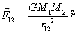
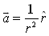
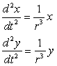

One of the most studied central force problems is Newton's universal law of gravitation. This law states that two spherical particles of mass M1 and M2 attracted each other with a force F12 that is inversely proportional to their separation squared and is directed along a line connecting their centers

The direction of the force on M1 is indicated by a unit vector "r-hat" pointing from M1 to M2. The proportionality constant G depends on the system of units and takes the value G = 6.67x10-11 m3/kg.s in the metric system.
Because two gravitationally interacting particles orbit in a plane about their common center of mass, we choose a coordinate system with the center of mass at the origin. Intermediate mechanics texts show this two-body problem can be reduced to an equivalent one-body problem so this inverse square law model is very general.
Applying Newton's Second Law F = M1a to the orbiting mass and using units such that M2G=1 the acceleration of the orbiting mass becomes

Rewriting this vector formula using Cartesian components and recognizing that sin(θ) = y/r, cos(θ) = x/r, and r = (x2+y2)1/2 in the plane of the orbit gives the following coupled differential equations for input into the Ejs model.
